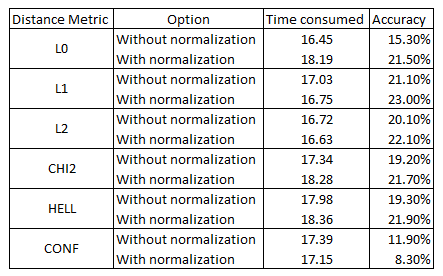

Project 4: Scene Recognition with Bag of Words
The goal of this project is to create a scene recognition and classification algorithm. We try to classify scenes into 1 of 15 categories. To do this, we extract features from each scene, and train a classifier over the extracted features. We experiment with two different features- tiny images and bag of sift, and with two different classifiers- nearest neighbors and support vector machines.
This assignment can be divided into three main parts, based on the combinations of feature and classifier used for implementation.
- Tiny images representation and nearest neighbor classifier
- Bag of SIFT representation and nearest neighbor classifier
- Bag of SIFT representation and linear SVM classifier
Confusion matrix
In machine learning, a confusion matrix (also known as an error matrix) is a specific table layout that allows visualization of the performance of a supervised learning algorithm. Every row in the matrix represents instances in a predicted class while each column represents instances in an actual class. In this project, we use the jet colormap for the confusion matrix where the spectrum of colors ranges from dark blue to light blue to green to yellow to orange to dark red.
No implementation
In the given starter code, we randomly guess the category of each test image without implementing anything. Since we have 15 categories, the chances of classifying a scene correctly is 1/15 = 6.67%. Thus, chance performance is ~7%. On running the starter code, I got an accuracy of 0.068 i.e. 6.8% in 1.690404 seconds.
Part 1: Tiny images representation and nearest neighbor classifier
A] Tiny images
The "tiny image" feature is one of the simplest possible image representations. Each image is resized to a small, fixed resolution (generally 16x16). It works slightly better if the tiny image is made to have zero mean and unit length. This is not a particularly good representation, because it discards all of the high frequency image content and is not especially invariant to spatial or brightness shifts. We use tiny images as a baseline.
Algorithm
- Read the image.
- Resize and reshape the image.
- Extract image features.
- To increase performance, make the tiny images zero mean and unit length.
- Return tiny image features.
B] Nearest neighbor Classifier
The k-nearest neighbors algorithm (k-NN) is a non-parametric method used for classification and regression. In this project, we use the algorithm for classification purposes. The input consists of the k closest training examples in the feature space. The output is a class membership. An object is classified by a majority vote of its neighbors, with the object being assigned to the class most common among its k nearest neighbors. When tasked with classifying a test feature into a particular category, the algorithm finds the "nearest" training example using a suitable metric, and assigns the test case the label of that nearest training example. The nearest neighbor classifier has many desirable features -- it requires no training, it can learn arbitrarily complex decision boundaries, and it trivially supports multiclass problems. It is quite vulnerable to training noise, though, which can be alleviated by voting based on the K nearest neighbors. Nearest neighbor classifiers also suffer as the feature dimensionality increases, because the classifier has no mechanism to learn which dimensions are irrelevant for the decision.
Algorithm
- Create an empty matrix for predicted_categories.
- Use vl_alldist2() function to compute pairwise distance matrix. This function supports different distance metrics like L0, L1, L2, LINF, CHI2 and HELL.
- We use sort() for n nearest neighbors.
Analysis
The best result obtained (Normalized tiny image features + nearest neighbor classifier having 23% accuracy in 16.75 sec) is shown below:
Part 2: Bag of SIFT representation and nearest neighbor classifier
A] Bag of SIFT
a) Vocabulary of words
To use a more sophisticated image representation, i.e. bogs of quantized SIFT features, we first need to build a vocabulary of visual words. This can be done by sampling many local features from the training set and then clustering them with kmeans. The number of kmeans clusters is our vocabulary size and the size of our features. This code saves the built vocabulary as vocab.mat to avoid recomputation on future runs. It can now be loaded from the .mat file, whenever required.
Algorithm
- Load images from the training dataset.
- Call vl_dsift() with a large step size to save memory and speed up clustering.
- Use vl_kmeans() with sift features and vocab_size.
b) Bag of SIFT
SIFT is a very sophisticated image representation which can be used to represent the training and testing images as visual words. Many SITF descriptors can be densely sampled for each image. We can then count the number of SIFT descriptors that fall into each cluster in the visual word vocabulary. This can be done by finding the nearest neighbor kmeans centroid for every SIFT feature. We can then generate a histogram with dimensions equal to vocab size, where each bin counts how many times a SIFT descriptor was assigned to that cluster. The histogram should then be normalized so that image size does not dramatically change the bag of feature magnitude.
Algorithm
- Create an empty SIFT matrix.
- Iterate over number of rows in image_paths.
- Compute sift features using vl_dsift(). A smaller step size will result in more dense sampling, but the time taken will be more. Hence to reduce time, we use a larger step size. We also use a 'fast' parameter for faster computation.
- Use vl_kmeans() with sifts and vocab_size.
B] Nearest neighbor Classifier
This implementation remains same as in Part 1.
Analysis: vary distance metric
Distance Metric: L2 Accuracy: 52.3% Time consumed: 819.64 secDistance Metric: CHI2 Accuracy: 52.5% Time consumed: 942.60 sec
Part 3: Bag of SIFT representation and linear SVM classifier
A] Bag of SIFT
This implementation remains same as in Part 1.
B] Support vector machine (SVM) classifier
A support vector machine (SVM) is a supervised machine learning model with associated learning algorithms that analyze data which can be used for classification. Given a set of training examples, each marked as belonging to one or the other of two categories, an SVM training algorithm builds a model that assigns new examples to one category or the other, making it a non-probabilistic binary linear classifier. SVMs are effective in high dimensional spaces and when number of dimensions is greater than the number of samples. With SVMs, different Kernel functions can be specified for the decision function. We explore this property later on in the project. We can also customize kernels.
Algorithm
- Find out the unique category labels and their count.
- Set a parameter lambda that can be fine tuned later for improved performance.
- In a loop, use the strcmp() function that tells you which indices in train_labels match a particular category. This is then used to create the binary labels for each SVM training task.
- We then use the vl_svmtrain() function that trains linear SVMs based on training samples, binary labels, and lambda which regularizes the linear classifier.
- We then run a loop for the test image features and predict the categories, using the SVM we trained in the previous step.
Analysis: vary step size and distance metrics
Analysis: vary lambda with step-size=5, vocab_size=200, distance metric=CHI2
| Lambda | Accuracy | Time consumed in seconds |
| 0.00001 | 66.10% | 950.68 |
| 0.0001 | 69.10% | 956.36 |
| 0.001 | 61.20% | 955.33 |
| 0.01 | 51.30% | 984.44 |
| 0.1 | 36.90% | 499.19 |
Analysis: vary lambda with step-size=5, vocab_size=200, distance metric=L2
| Lambda | Accuracy | Time consumed in seconds |
| 0.00001 | 66.0% | 841.23 |
| 0.0001 | 64.50% | 840.53 |
| 0.001 | 62.10% | 839.33 |
| 0.01 | 59.87% | 840.27 |
| 0.1 | 58.35% | 822.63 |
Observations:

Graduate Extra Credits
Note:
- Since it takes more time to run the code with vocab_size = 200, for extra credits implementation, I consider vocab_size=100.
- Step size in bag of sifts = 5 unless mentioned otherwise.
- Lambda = 0.00001 unless mentioned otherwise.
1] Feature representation extra credit (8 points)
a) Experiment with features at multiple scales: sampling features from different levels of a Gaussian pyramid
Feature scaling is a method used to standardize the range of independent variables or features of data. In data processing, it is also known as data normalization and is generally performed during the data preprocessing step. In this project, I experiment by sampling features from different levels of a Gaussian pyramid as suggested in the project prompt.
i. Using inbuilt function impyramid()
I used the inbuilt function in MATLAB, impyramid() to generate different levels of a Gaussian pyramid before sampling them in get_bag_of_sifts.m file. This function allows us to pass a parameter that can be set to 'reduce' or 'expand' so that we can indicate if we want to downsample or upsample the image that was read in. The observations are documented below:
Analysis
| Operation | Accuracy | Time consumed in seconds | Results |
| Reduce by 1 level | 64.7% | 508.28 | |
| Reduce by 2 levels | 64.5% | 504.26 | |
| Expand by 1 level | 64.3% | 781.59 |
I did not record the time taken for expansion beyond 1 level because expansion to the 1st level itself took up a huge amount of time. On the other had, reduction greatly reduced the accuracy noticeably, which is why I didn't analyse reduction beyond 2 levels. Thus, in all, I experimented with a pyramid with 4 levels.
ii. Using inbuilt functions imgaussfilt() and imresize()
I used the inbuilt functions imgaussfilt() and imresize() in MATLAB, to manually generate different levels of a Gaussian pyramid before sampling them in get_bag_of_sifts.m file. This function allows us to pass a parameter that can be set to the scale we want to resize the image to. Thus we can indicate if we want to downsample (i.e. scale factor < 1) or upsample (i.e. scale factor > 1) the image that was read in. The observations are documented below:
Analysis
| Operation | Scale factor | Accuracy | Time consumed in seconds | Results |
| Reduce | 0.90 | 53.3% | 449.31 | |
| Reduce | 0.81 | 54.4% | 479.98 | |
| Expand | 1.11 | 55.6% | 531.66 |
1] Feature representation extra credit
b) Add additional, complementary features: GIST descriptors
Bag of words model does not capture spatial information. Gist descriptors for an image work by partitioning the image into finer sub-regions and computing the histogram of local features found inside each sub-region. I implemented the model to generate GIST descriptors on the image that we read in. This code is based on the paper "Modeling the shape of the scene: a holistic representation of the spatial envelope" by Aude Oliva and Antonio Torralba. The code makes use of the LMgist() function. The observations are documented below:
Algorithm
- Read in every image from image_paths
- Size the image to [256 256]
- Set orientations per scale, in this case it is [8 8 8 8]
- Pass the preprocessed data to the LMgist() function
- Reshape the result returned by the function
- Assign it to image features vector
i. GIST + Nearest neighbor
Analysis
Accuracy : 56.6%Time consumed : 930.86 sec
ii. GIST + SVM
Analysis
Accuracy : 67.6%Time consumed : 921.28 sec
Additionally, one could try concatenating SIFT and GIST features before passing on the image features to the classifier.
2] Feature quantization and bag of words extra credit (5 points)
a) Use of a more sophisticated feature encoding schemes analyzed in the comparative study of Chatfield et al.: Fisher
One possible improvement that can be made to the bag of words model is to use a more sophisticated encoding scheme such as Fisher encoding. The distribution of training feature vectors is first modeled as a Gaussian Mixture Model (GMM) with K clusters. Next, the training and test features are encoded based on the computed priors, means, and covariances for each cluster. Finally, a linear SVM classifier is trained based on the Fisher vectors and used to predict class labels. I implemented the Fisher kernel, which is a more more sophisticated feature encoding schemes analyzed in the comparative study of Chatfield et al. For this purpose, I have used the two functions vl_gmm() and vl_fisher, offered in the VL_Feat package. The observations are documented below:
Algorithm
- Follow same steps as in get_bags_of_sifts till extraction of SIFT features.
- Call vl_gmm() function and generate means, covariances and priors.
- In suitable format, assign them to stats, a variable to denote statistics.
- Generate stats.mat and load it in get_fisher_encoding()
- After preprocessing the data from stats.mat, call vl_fisher() function
- Assign the result returned to image features vector
Analysis
Vocabulary size: 100 Accuracy : 80.1%Time consumed : 578.05 sec Vocabulary size: 50 Accuracy : 79.6%
Time consumed : 305.49 sec Vocabulary size: 25 Accuracy : 75.7%
Time consumed : 196.38 sec
3] Classifier extra credit (3 points)
a) Train the SVM with more sophisticated kernels using a different SVM package than VL feat's linear SVM: RBF
In this section, I have implemented the RBF (radial basis function) kernel that is based on the paper "Training a Support Vector Machine in the Primal" by O. Chapelle. The Radial basis function kernel, also called the RBF kernel, or Gaussian kernel, is a kernel that is in the form of a radial basis function (more specifically, a Gaussian function). My code is present in my_svm.m file and it has 2 supporting files, compute_kernel.m and primal_svm.m . The observations are documented below:
SIFT + Modified SVM
Algorithm
- Read in the unique train labels and categories.
- Lamda was set to 0.00001.
- Set kernel type and sigma. I set kernel type to rbf and sigma to 1
- Call compute_kernel()
- Train the function based on training data images and labels using the primal SVM by giving a call to primal_svm()
- Test the model similarly, using the test dataset and assign the result to predicted_categories
Analysis (lambda=0.00001)
Accuracy : 65.2%Time consumed : 501.41 sec
4] Experimental design extra credit (3 points)
a) Experiment with many different vocabulary sizes and report performance: 25, 50, 100, 250, 500, 1000, 10000
I am experimenting by varying the vocab size. The observations are documented below:
SIFT + SVM
Analysis
The time consumed is inclusive of the time taken to build the vocab.mat file.| Vocabulary size | Accuracy | Time consumed in seconds | Results |
| 25 | 64.6% | 516.96 | |
| 50 | 65.0% | 518.56 | |
| 100 | 64.5% | 502.50 | |
| 250 | 65.1% | 524.33 | |
| 500 | 65.0% | 546.50 | |
| 1000 | 64.4% | 528.60 | |
| 10000 | 64.4% | 593.64 |
Standard deviation in accuracy = 0.3078
Standard deviation in time consumed = 29.8609 seconds
Observations:


Observations
- Nearest neighbor classifier works better with normalization, and L1 distance metric.
- Bag of SIFT with nearest neighbor classifier works slightly better with CHI2 distance metric but takes more time for computation.
- Bag of SIFT with SVM works better for a low stepsize e.g. 3 with L2 distance metric but computation time required is too high.
- When using impyramid(), both accuracy and time taken decrease on using the 'reduce' parameter. However on using 'expand', accuracy decreased further although time taken increased.
- When using imgaussfilt() with imresize(), on reducing the scale factor, both accuracy and time taken increased. On increasing the scale factor, accuracy improved and time taken increased significantly.
- GIST descriptors perform comparatively better than SIFT in terms of accuracy and time taken, because SIFT compromises on time to increase accuracy.
- Fisher kernel improved the performance by significantly increasing the accuracy in a much smaller time period.
- On using RBF kernel, I achieved almost the same accuracy as with normal SVM, but in a much smaller time period.
- While documenting the effect of vocabulary size on accuracy and time, anomalies were observed in accuracy for vocab_size = 100 and vocab_size = 1000. Similarly, anomalies were observed in time taken for vocab_size = 100 and vocab_size = 1000. This matched what the professor spoke about in class, that at some vocabulary sizes we might find anomalies in the general trend.